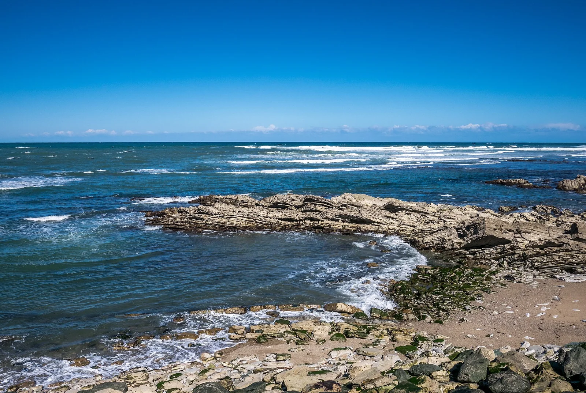

Parlementia — Guéthary
Pays Basque, France · surf

Spot de grosse houle qui se réveille quand l'Atlantique gronde. Vague de reef pour surfeurs aguerris, réputée pour le gros.
- Lieu
- Pays Basque, France
- Niveau
- Expert
- Activités
- surf
- Type d'eau
- Mer / océan
- Coordonnées
- 43.42, -1.61 (position approximative du secteur)
Dangers à connaître
- Grosses vagues, longue rame jusqu'au pic.
- Fond rocheux.
- Courants importants.
Le conseil d'Ocean Buddy
Réservé aux surfeurs expérimentés et en bonne forme physique. N'y va jamais seul.
Ouvrir dans Ocean Buddy Télécharger sur l'App Store
Source : Description historique Ocean Buddy · vérification externe en attente.